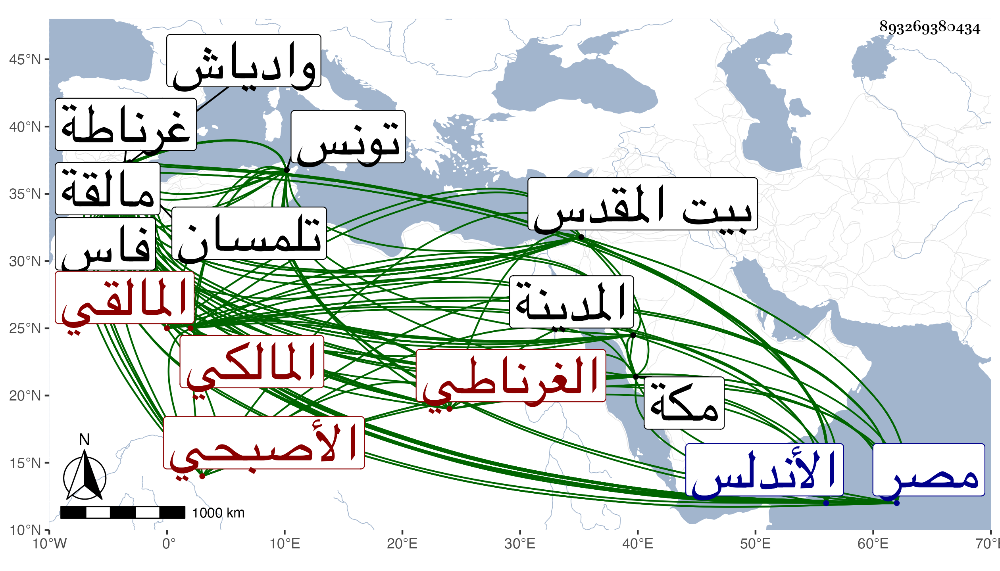

0902Sakhawi.DawLamic.ITO20230111-ara1.EIS1600.893269380434
Biography ID: 893269380434
56
محمد بن علي بن محمد بن علي بن علي بن قاسم بن مسعود أبو عبد الله الأصبحي الغرناطي الأصل المالقي المالكي ويعرف بالأزرق . ولد بمالقة ونشأ بها وحفظ القرآن وغيره وتلا لابن كثير على قاضيها أبي إسحاق إبراهيم ابن أحمد البدوي ولنافع على أبي عمرو محمد بن محمد بن أبي بكر بن منظور والخطيب أبي عبد الله محمد بن أبي الطاهر بن محمد بن بكروف ... الفهروي وعنه أخذ في مبادئ العربية والفقه والفرائض وكذا أخذ عن الأولين العربية والفرائض وعن ثانيهما الفقه والحساب ولازم إبراهيم بن أحمد بن فتوح مفتي غرناطة بها في النحو والفقه والأصلين والمنطق بحيث كان جل انتفاعه به وحضر مجالس أبي عبد الله محمد بن محمد السرقسطي العالم الزاهد مفتيها أيضا في الفقه وكذا مجالس الخطيب أبي الفرج عبد الله بن أحمد البقني الشريف قاضي الجماعة أبي العباس أحمد بن يحيى بن أبي عبد الله التلمساني الشارح جده لجمل الخونجي والخطيب المفتي أبي عبد الله محمد بن يوسف بن المواق العبدري وأخذ الأدب عن محمد بن زكريا ابن جبير في آخرين لقيهم بفاس وتلمسان وتونس كقاضي الجماعة أبي يحيى بن محمد بن أبي بكر بن عاصم فإنه جالسه كثيرا وانتفع به . وولي قضاء غربي مالقة في أيام سعد بن علي بن يوسف بن نصر صاحب الأندلس ثم قضاء مالقة نفسها عن أبي عبد الله محمد بن سعد ثم قضاء وادياش عن أخيه أبي الحسن علي بن سعد ثم نقله إلى مالقة ثم لقضاء الجماعة بغرناطة . ومات أبو الحسن وهو على قضائها فاستمر به أخوه أبو عبد الله ثم خرج معه إلى وادياش وهما منفصلان فوجهه قاصدا إلى السلطان أبي عمرو عثمان بن محمد بن أبي فارس لمساعدة الأندلسيين على عدوهم الكافر فلم يلبث أن مات أبو عمرو فارتحل صاحب الترجمة إلى الديار المصرية ليحج فحج في البحر سنة خمس وتسعين فأقام بالمدينة أربعة أشهر ثم بمكة شهرين وعاد بعد حجه إلى مصر في البحر أيضا فدخلها في منتصف ربيع الآخر من التي تليها فنزل بتربة السلطان عند أحمد بن عاشر فتكلم له في ولاية قضاء القدس ، وقصدني في أثناء ذلك ورأيته من رجال الدهر وأظهر الاغتباط باجتماعه بي وطالع بعض تصاليفي وغيرها وسافر في رمضان قاضيا وقد وليه في ثانية فوصله في سابع عشر شوال ووقع الثناء عليه من الكمال بن أبي شريف وغيره فلم يلبث أن تعلل فدام نحو أربعين يوما ثم مات في يوم الجمعة سابع عشري ذي الحجة وكثر الأسف على فقده ودفن خارج باب خان الظاهر رحمه الله .
